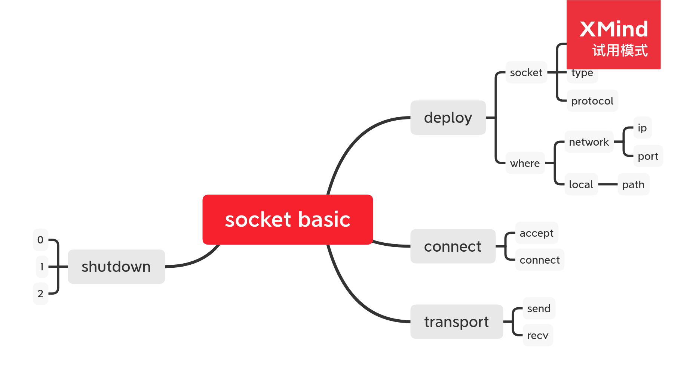

学习套接字
Table of Contents
1 TCP 网络套接字

1.1 说明
1.1.1 程序步骤
TCP套接字程序大概有4个步骤，分别是
- 部署 deploy
- 连接 connect
- 传输 transport
- 关闭 shutdown
1.1.2 项目结构
在本目录下，有
- lib/
- tcp.h
- tcp.h
- src/
- tcp.cc
- tcp.cc
- client.cc
- server.cc
- Makefile
1.2 知识点说明
1.2.1 部署
要创建一个套接字描述符，需要调用
int socket(int domain, int type, int protocol);
DONE 部署服务端
这里做点简化，/bind/, listen 一条龙服务
int server(const char * ip, unsigned int port); int tcp::server(const char *ip, unsigned int port) { int sockfd = socket(AF_INET, SOCK_STREAM, 0); struct sockaddr_in address; address.sin_family = AF_INET; address.sin_addr.s_addr = inet_addr(ip); address.sin_port = htons(port); ::bind(sockfd, (struct sockaddr *)&address, sizeof(address)); ::listen(sockfd, 5); return sockfd; }
DONE 部署客户端
int client(int domain=AF_INET); int tcp::client(int domain) { int sockfd = socket(domain, SOCK_STREAM, 0); return sockfd; }
1.2.2 连接
服务端接受套接字的连接，并生成一个 新的套接符描述符 来处理与客服端的数据交互
客户端向服务端发起连接，进行数据传输
DONE 服务端接收连接
int accept(int serverfd); int tcp::accept(int serverfd) { int connfd = ::accept(serverfd, NULL, NULL); return connfd; }
DONE 客户端连接服务端
int connect(int connfd, const char * ip, unsigned int port); int tcp::connect(int sockfd, const char *ip, unsigned int port) { struct sockaddr_in address; address.sin_family = AF_INET; address.sin_addr.s_addr = inet_addr(ip); address.sin_port = htons(port); int result = ::connect(sockfd, (struct sockaddr *)&address, sizeof(address)); return result; }
1.2.3 传输
连接好服务端和客户端后，再是进行双方的数据传输
发送数据
const auto send = ::send;
接收数据
const auto recv = ::recv;
1.2.4 关闭
结束两端的交互后，可以把套接字关闭，这里不用 close ，而用 shutdown
const auto shutdown = ::shutdwon;
1.3 代码测试
1.3.1 服务端程序
const int buffer_size = 1024; int main() { int server = tcp::server("127.0.0.1", 9999); int connfd = tcp::accept(server); char buffer[buffer_size]; memset(buffer, 0, sizeof(buffer)); int result = 0; result = tcp::recv(connfd, buffer, sizeof(buffer), 0); std::cout << "[server] recv from client: " << std::string(buffer, result) << std::endl; sprintf(buffer, "fuck you"); tcp::send(connfd, buffer, strlen(buffer), 0); std::cout << "[server] send done" << std::endl; tcp::shutdown(connfd, 2); tcp::shutdown(server, 2); return 0; }
1.3.2 客户端程序
const int buffer_size = 1024; int main() { int client = tcp::client(); tcp::connect(client, "127.0.0.1", 9999); char buffer[buffer_size]; memset(buffer, 0, sizeof(buffer)); // 1. read // 2. send int result = 0; sprintf(buffer, "hello world"); result = tcp::send(client, buffer, strlen(buffer), 0); std::cout << "[client] send message to server" << std::endl; result = tcp::recv(client, buffer, sizeof(buffer), 0); std::cout << "[client] recv from server:" << std::string(buffer, result) << std::endl; tcp::shutdown(client, 2); return 0; }
1.3.3 build and run
build/tcp.o: lib/tcp.h src/tcp.cc g++ -c src/tcp.cc -o build/tcp.o target/server: server.cc build/tcp.o g++ -c server.cc -o build/server.o g++ build/server.o build/tcp.o -o target/server target/client: client.cc build/tcp.o g++ -c client.cc -o build/client.o g++ build/client.o build/tcp.o -o target/client clean: rm build/*
1.3.4 运行结果
➜ socket target/server & [1] 10249 ➜ socket target/client [client] send message to server [server] recv from client: hello world [server] send done [client] recv from server:fuck you [1] + 10249 done target/server
2 UDP 网络套接字
UDP 网络套接字程序的设计可以遵循上面的四个步骤吗？
由于UDP不是面向连接的服务，其中
数据发送端 就像一个邮差
数据接收端 就像一个邮箱
邮差会直接把信件放到邮箱里，收不收是邮箱主人的事，邮差不需要知道，四步骤中的
连接 可以忽略了，那我们按照
- 部署
- 传输
- 关闭
三个步骤来设计程序就行了
3 本地套接字
本地套接字有什么特殊的吗？
没有啊，网络套接字的传输靠的是网络，本地套接字靠的是文件系统，只需要在创建套接字
描述符的时候把两端套接字的 domain 改为 AF_LOCAL 就行了，